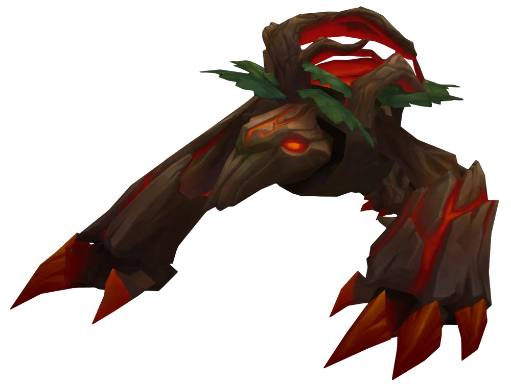

Map
There are three lanes that connect through the jungle. Each lane has towers that block and dmg enemies from their nexus. Minions spawn periodically in lanes. Jungle has monsters that give gold and exp. Some monsters give powerups and team boosts. Using these, your team can break enemy nexus to win the match.
Roles
There are 5 roles that play on the Map: Top, Mid, Bottom, Support, and Jungler. The bottom lane has the support and bottom role while Jungle is in charge of the monsters, events, and helping lanes out. Each role have a majority of different champs that can play in those lanes.
Large Monsters

|
 | |
|
Scuttle crab spawns an orb in river which grant allies speed boosts when walking over and vision near the orb. |
Blue Sentinel grant’s the blue buff which is ability haste and mana regen. |
Red Brambleback grant’s the red buff which gives health regeneration, burn to attacks, and basic attack slows enemies. |

|
||
|
Additionally, large radius is given radius to team highlighting wards, players, and other items. |
Teammates who are alive also get blue buff. |
Teammates who are alive also get red buff. |
Epic Monsters
|
Chemtech Blight gives permanent tenacity and heal and shield power:1 spawns at a time. |
Cloud Drake gives permanent slow resist and out of combat bonus movement speed:1 spawns at a time. |
Hextech Drake gives permanent ability haste and attack damage:1 spawns at a time. |
|
Infernal Drake gives permanent stack damage and ability damage:1 spawns at a time. |
Mountain Drake gives permanent amor and magic resistance:1 spawns at a time. |
Ocean Drake gives permanent health regeneration:1 spawns at a time. |

|

|
|
|
Elder Dragon is spawned after a team gets 4 dragon buffs. Killing gives bonus true damage and hitting enemies below 20% hp executes them for 150 seconds and respanws periodicly. |
Voidgrubs give a stack of “touch of the void” which increase basic attack damage against towers: spawns in group of 3. |
Drops a consumable that spawns a Rift Herald the user can control that focuses towers. |
|
Baron Nashor gives an empowered recall and nearby ally minions are empowered: Has 3 forms but only 1 spawns at a time. | ||